Foundation-Model Decision Agents
Grounding language and multimodal foundation models as agents that retrieve evidence, plan hierarchically, and make decisions in interactive environments.
Explore representative workHi, my name is Zhi Wang, an Associate Professor and PhD Supervisor at Nanjing University. Previously, I received the PhD degree from City University of Hong Kong and the Bachelor degree from Nanjing University. I was a visiting scholar at University of New South Wales, Nanyang Technological University, and Chinese Academy of Sciences.
My research focuses on developing general-purpose decision-making agents across reinforcement learning, post-training and alignment of foundation models, vision-language-action models, and embodied AI. My long-term goal is to bridge foundation models and embodied intelligence, enabling agents to perceive, reason, decide, and act autonomously in complex real-world environments.
Grounding language and multimodal foundation models as agents that retrieve evidence, plan hierarchically, and make decisions in interactive environments.
Explore representative workUsing reinforcement learning to improve reasoning, exploration, and output diversity in language and generative models through principled reward and optimization design.
Explore representative workDesigning agents that autonomously refine their evidence, reasoning, and tool-use workflows through iterative interaction and feedback.
Explore representative workDeveloping agents that generalize across tasks and adapt over time through in-context, offline, meta, continual, and lifelong reinforcement learning.
Explore representative workTwo papers on RL for LLM reasoning and agentic RAG were accepted, including one Oral paper.
Three papers on RL for LLM reasoning and in-context RL were accepted.
Three papers on in-context RL, language agents, and RL for LLM reasoning were accepted.
One paper on hierarchical LLM agents was accepted.
One paper on interpretable multi-agent reinforcement learning was accepted.
One paper on generalist RL agents was accepted.
One paper on efficient multi-agent RL coordination was accepted.
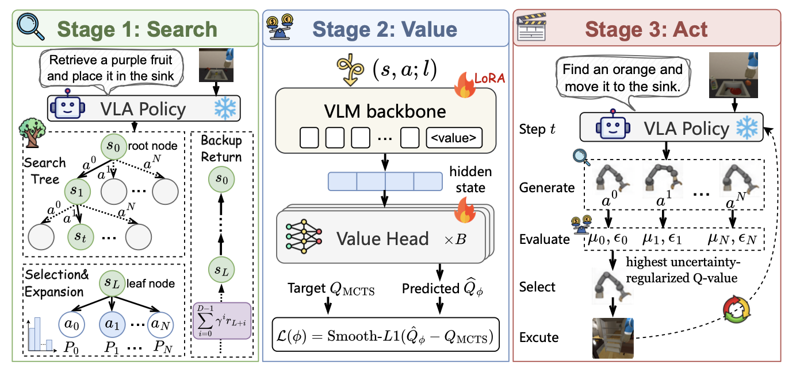
SVA distills tree-search trajectories into a lightweight action evaluator, improving frozen VLA policies through test-time action selection.
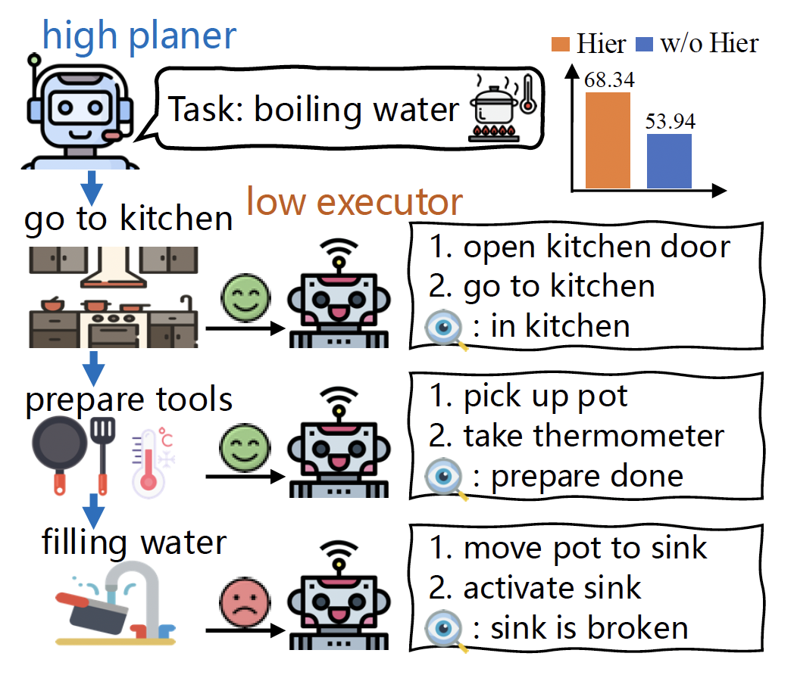
GLIDER grounds language models as efficient decision-making agents through offline hierarchical reinforcement learning.
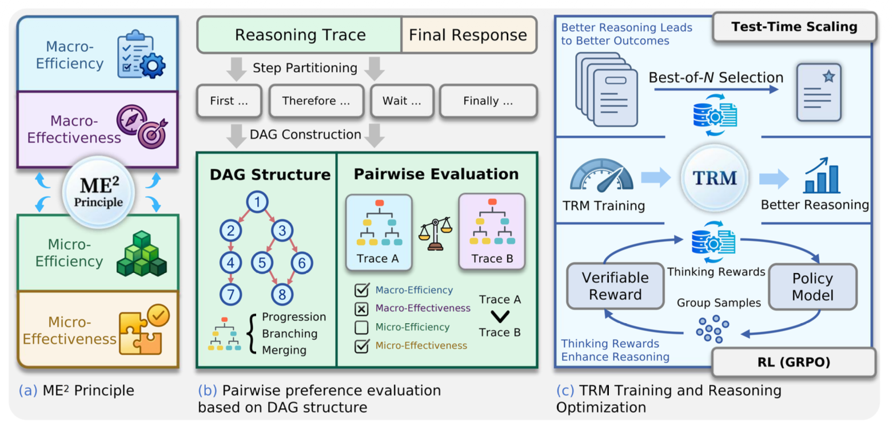
A systematic study of how complex reasoning can be characterized, evaluated, and optimized.
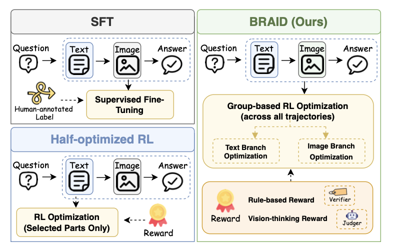
BRAID formulates interleaved text-image reasoning as a unified decision process, enabling reinforcement learning across textual and visual generation steps.
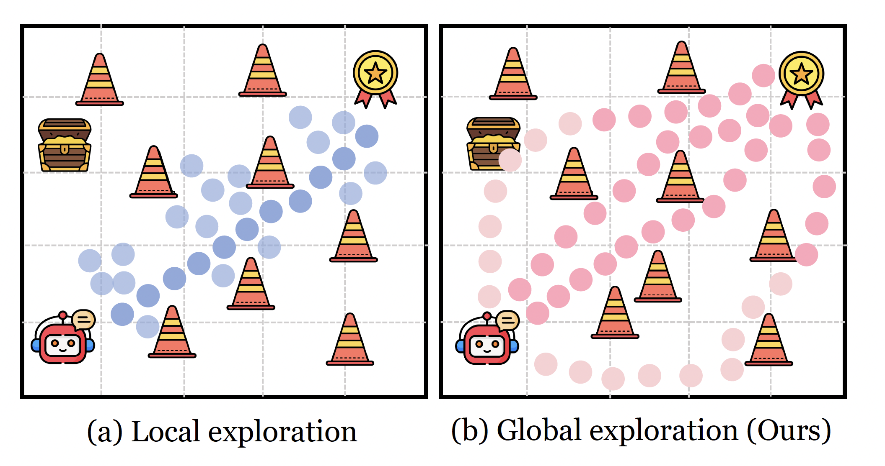
Global diversity incentives promote deep exploration for reasoning in a semantically structured space.
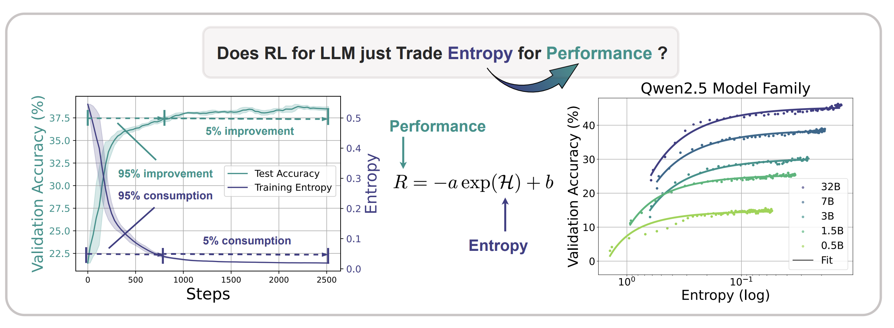
Understanding entropy dynamics motivates targeted controls that preserve exploration during reinforcement learning.
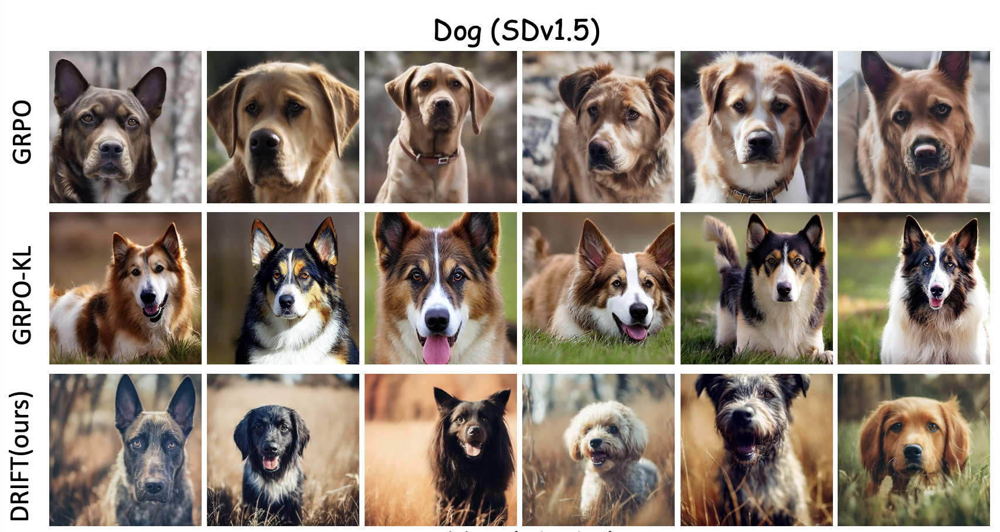
Diversity incentives reconcile strong task alignment with varied outputs throughout on-policy fine-tuning.
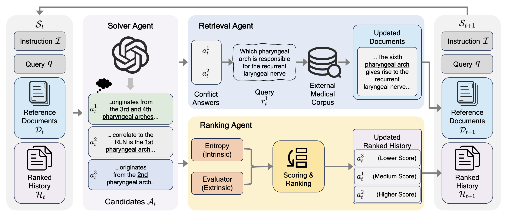
MA-RAG enables self-improving medical reasoning by iteratively refining external evidence and internal reasoning history.
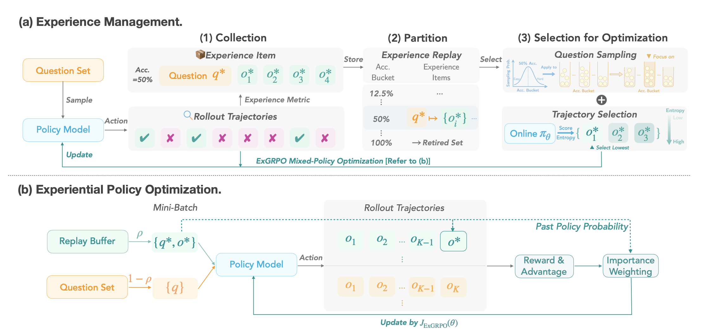
Valuable reasoning experiences are prioritized using rollout correctness and entropy to balance exploration and exploitation.
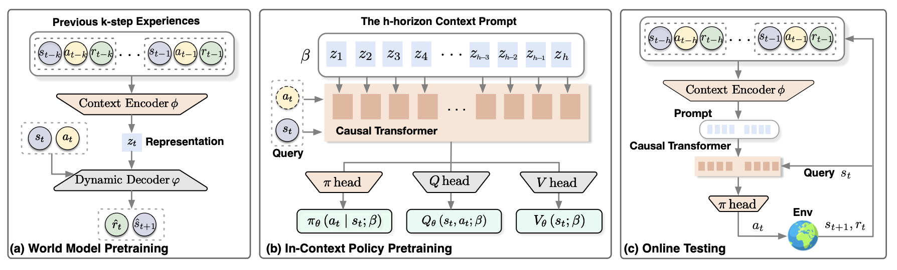
Dynamic programming and world modeling steer in-context RL toward efficient reward maximization and generalization.
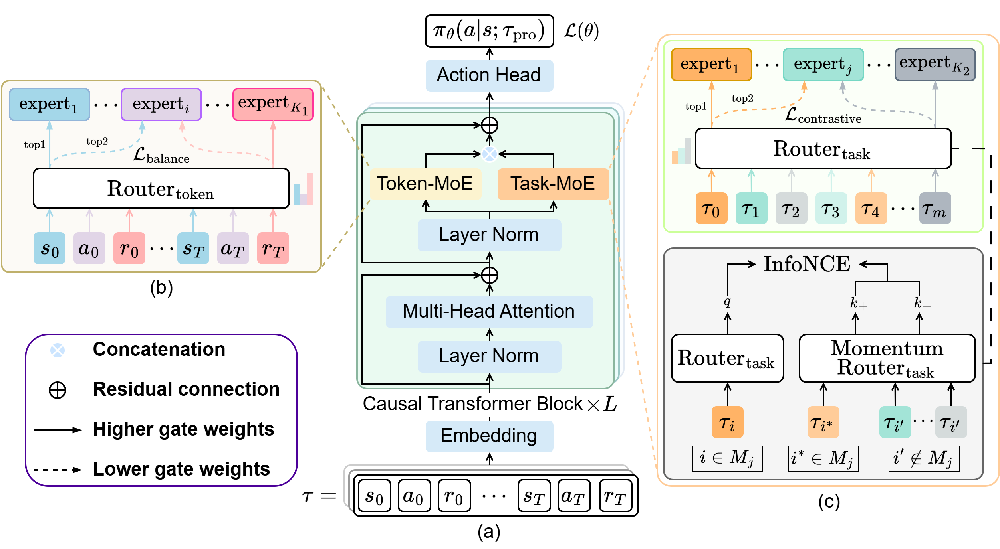
T2MIR combines mixture-of-experts modeling with in-context reinforcement learning to improve scalable task generalization.
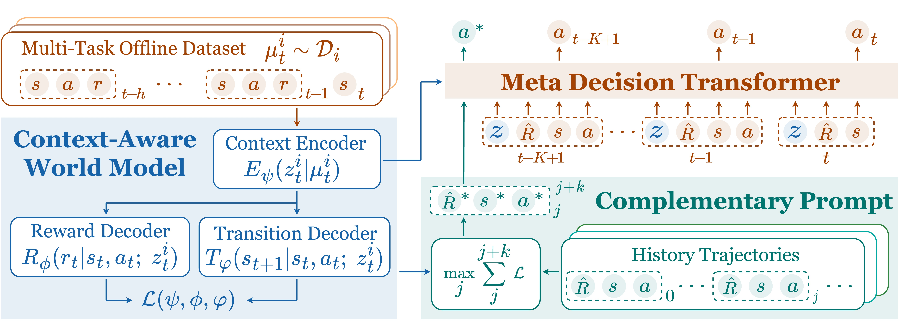
Transformer sequence modeling and disentangled world models enable efficient generalization in offline meta-RL.
PhD Student
jmliu@smail.nju.edu.cnPhD Student
zicanhu@smail.nju.edu.cnPhD Student
shilinzhang@smail.nju.edu.cnMaster Student
wenhaowu@smail.nju.edu.cnProgram Chair
Founding Chair
Area Chair
Guest Editor
Associate Editor
Course information, announcements, and lecture materials for students at Nanjing University.